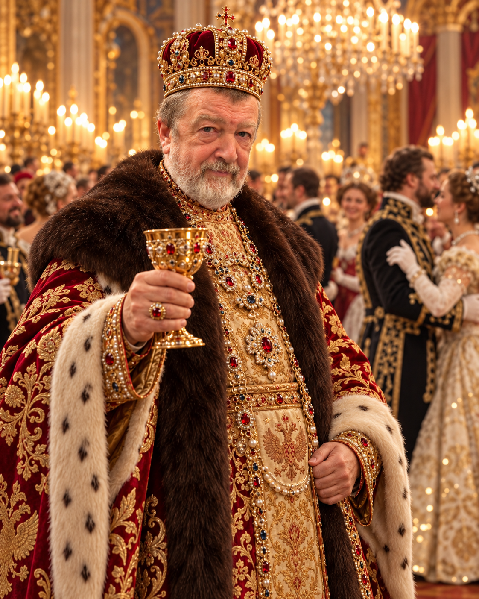
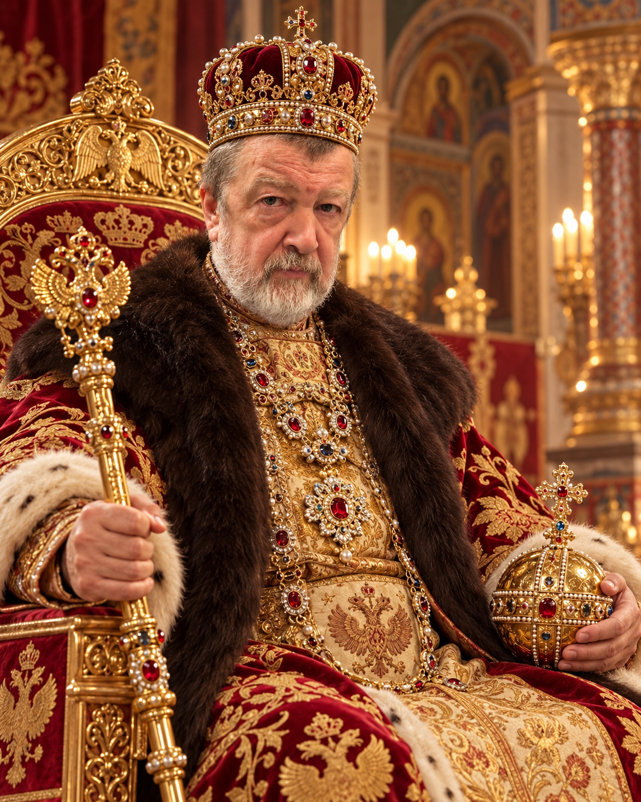

Пиры да яства
Любил государь кушать — и не скрывал сего. Щи наваристые, мясо запечённое, пироги румяные. Чем щедрее стол, тем мудрее казались царские решения.
Девиз: «Сытый царь — мирное царство»История великого государя
Царь, чьё имя гремело на балах и в палатах. Человек большой души, отменного аппетита и редкой способности побеждать неприятелей, не отрываясь от волшебной скрижали.

В старинных летописях имя Юрия Петровича Великолепного упоминается с особенным трепетом. Не потому, что он требовал поклонов. Просто никто не знал, какой царский замысел придёт ему в голову следующим.
Он умел быть строгим на государственном совете, галантным на балу и совершенно беззащитным перед тарелкой вкусного ужина. Его верные бояре поговаривали: «Коли государь улыбается — будет праздник. Коли нахмурился — кто-то забрал последний пирожок».
Больше всего он ценил верность, остроумие и людей, которые не мешали ему совершать великие дела. А ещё — красивых женщин, богатые угощения и волшебную скрижаль, в которой открывался загадочный мир «Рэйд Шаров Легендс».
От царского трона до волшебной скрижали: подвиги, страсти и дела, которые переживут века.
«Царствовать — дело трудное. Но кто, как не я, сделает его великолепным?»
— приписывается Юрию ПетровичуВеликий правитель умеет наслаждаться жизнью. У нашего государя это получалось особенно убедительно.
Любил государь кушать — и не скрывал сего. Щи наваристые, мясо запечённое, пироги румяные. Чем щедрее стол, тем мудрее казались царские решения.
Девиз: «Сытый царь — мирное царство»Красивые женщины, изящные манеры, разговоры при свечах. На царских балах Юрий Петрович был опаснее любого дуэлянта — ибо поражал сердца одной улыбкой.
Девиз: «Красоте — царское почтение»Ни один мудрец не мог объяснить, откуда явилась сия дивная штуковина. Но стоило запустить «Рэйд Шаров Легендс», как государственные дела откладывались до следующего призыва.
Девиз: «Ещё один призыв — и спать»
Бояре приносили свитки, послы ожидали аудиенции, казначей пересчитывал золото. Но Юрий Петрович иногда произносил страшные слова: «Мне только ежедневную награду забрать».
И всё царство знало — государь вновь отправился в «Рэйд Шаров Легендс». Там он собирал героев, побеждал грозных чудовищ и с царским достоинством переживал неудачные призывы.
«Ежели выпадет легендарный герой — объявить праздник по всему государству!»Секретная запись из покоев Его Величества
Семь подлинных файлов из царского архива. Нажмите на любой портрет, чтобы рассмотреть его во всём величии.
Указ царя — закон. А если указ смешной, то ещё и повод для великого пира.